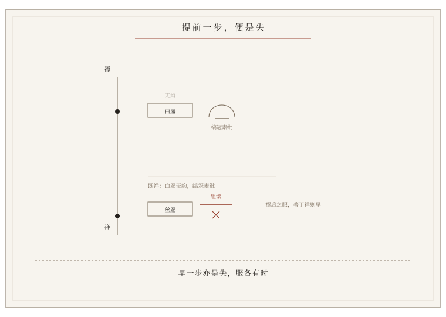

檀弓上 · 三·二十三 · 第 226 课
有子既祥而著丝屦、组缨。注「讥其早也。礼：既祥，白屦无絇，缟冠素纰」。
说什么事：一双屦、一条缨，早了一个月。
落在哪一层：礼，兼及礼制与礼意。论服之递变各有其月。
为何编在此位：上节以身示乐之限，此节以服示服之限。乐与服，同是哀之外见。
【经】有子蓋既祥而絲屨、組纓。
【注】讥其早也。礼：既祥，白屦无絇，缟冠素纰。有子，孔子弟子有若。
【疏】此一节明除丧失礼之事。「盖」是疑辞，录记之人传闻有子既祥而丝屦，未知审否，意以为实，故云「盖既祥而丝屦，以组为缨也」。注「讥其早也」：此丝屦组缨，是禫后之服；今既祥而著，故云「讥其早也」。云「礼，既祥，白屦无絇」，戴德《丧服变除礼》文；云「缟冠素纰」，《玉藻》文。素纰当用素为缨，未用组；今用组为缨，故讥之。案《玉藻》「玄冠綦组缨」，知此非綦组缨者，若其綦组为缨，则当以玄色为冠；若既祥玄冠，则失礼之甚，不应直讥组缨也。案《士冠礼》「冬皮屦」「夏用葛」，无云「丝屦」者；此丝屦，以丝为饰。絇、繶、纯之属：《士冠礼》「白屦，缁絇、繶纯」，「纁屦，黑絇、繶纯」；郑注《屦人》云「絇，屦头饰；繶是缝中紃；纯，缘也」。此有子盖亦白屦，以素丝为繶纯也。
盖 疏「疑辞」。传闻之辞，未必定然。
丝屦 疏「以丝为饰」之屦。
组缨 以组（丝带）为缨。缨，冠系。
絇 注「屦头饰」。
缟冠素纰 白冠，以素为缘。纰，缘也。
素纰／组缨 素为缨则合，组为缨则早。
有子大概在大祥之后就穿上了丝饰之屦、系上了组制的冠缨。
此节只有一句，且冠以「盖」——传闻之辞。所讥者「早」：丝屦组缨是禫后之服，有子既祥即著，早了一个月至两个月。礼于服，一步有一服；提前一步，便是失。
第一层 一「盖」字之慎 疏「『盖』是疑辞，录记之人传闻……未知审否」。记礼之人明知是讥，仍用「盖」字留疑。此可见古人记言之法：讥不失其辞，疑不失其实。
第二层 既祥之服 礼：既祥，白屦无絇，缟冠素纰。注引戴德《丧服变除礼》与《玉藻》。素纰当以素为缨，未当用组。有子用组，故讥。此层可见「祥服」与「禫服」之间有严格的一线。
第三层 絇繶纯之细 疏详释屦之三饰：絇为屦头饰，繶为缝中之紃，纯为缘。又举《士冠礼》白屦缁絇繶纯、纁屦黑絇繶纯为例。一双屦上有三处可议，礼之细，细到缝线。
第四层 辨非綦组 疏辨：《玉藻》有「玄冠綦组缨」，若此是綦组，则当配玄冠；既祥而玄冠，失礼更甚，记者不应只讥组缨。故知此为素冠而组缨。此辨极见疏家之细：定罪要定到分量上，不可笼统。
与今日何干 凡服制、礼制、仪节，最易被「差不多」抹平。此节所示：提前一步与到位一步，所差不在样子，在名分。
| 左 | 右 |
|---|---|
| 有子盖既祥而丝屦、组缨 | 盖为疑辞，传闻未审 |
| 讥其早也 | 此是禫后之服，著之过早 |
| 礼：既祥白屦无絇 | 戴德《丧服变除礼》 |
| 缟冠素纰 | 《玉藻》文，素为缨 |
| 素纰当用素为缨 | 今用组，故讥 |
| 非綦组缨 | 綦组当配玄冠，既祥玄冠失礼更甚 |
| 絇、繶、纯 | 屦头饰、缝中紃、缘 |
画一间堂下的阶前，视点俯而近。石阶上放着一双白屦（鞋头无饰，缝线素净），屦旁一方素帛折叠。再上一级阶，放着另一双屦，鞋头与缝线都有细丝饰，屦侧系着一条组带（丝质、色深、打结成缨状）。两双屦上下相隔一级，朝向相同。阶侧一顶白冠挂在木架上，冠缨是一条素帛。不写文字、不画人。赭色只用在下方那双屦的组缨上。
